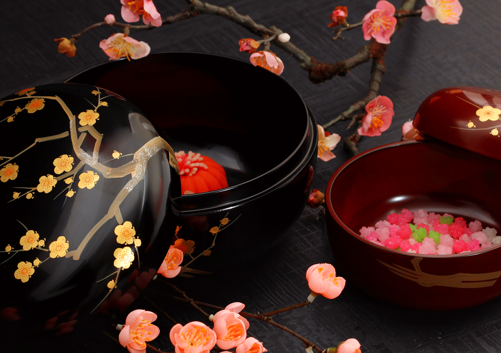

-
Hand-Painted by Experienced Artisans
-
Flowers Drawn with Ultrafine Gold Powders
-

Just the Size for Candies & Sweets
Our Traditional Favourites
Always in fashion.


Top Picks for GIFTS
We will send all items gift wrapped, with our original wrapping to add a touch of specialness.


 ▲ Then President Obama's favourite chocolates
▲ Then President Obama's favourite chocolates


 ▲ Steve Jobs' favourite Japanese mochi sweets
▲ Steve Jobs' favourite Japanese mochi sweets


Looking for more than a box?


● Content of the Month ●
How to
SUSHI
PARTY